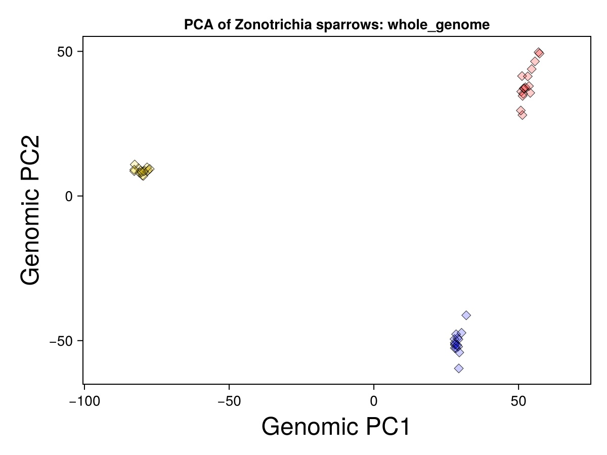
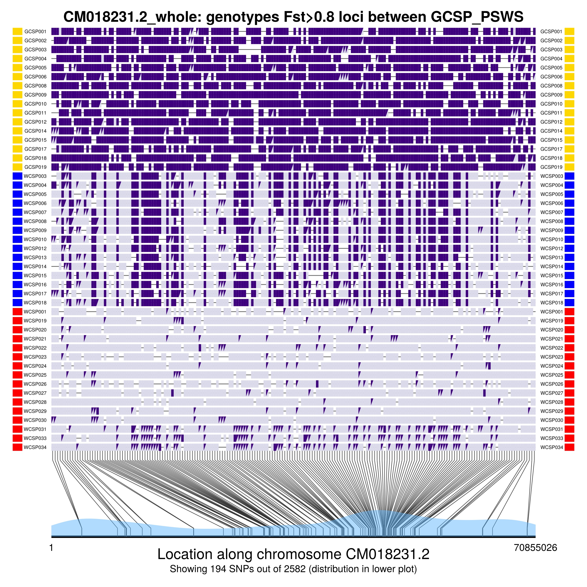

Load & Graph Data
Here we’ll bring together much of our Julia knowledge to actually analyze a large dataset.
The example here will be based on a dataset from this paper:
McCallum, Q., K. Askelson, F.F. Fogarty, L. Natola, E. Nikelski, A. Huang, and D. Irwin. 2024. Pronounced differentiation on the Z chromosome and parts of the autosomes in crowned sparrows contrasts with mitochondrial paraphyly: implications for speciation. Journal of Evolutionary Biology, voae004, https://doi.org/10.1093/jeb/voae004
We will load in a large dataset of genotypes throughout the genomes of Golden-crowned Sparrows and two forms of White-crowned Sparrows: pugetensis and gambelii. We will then use my own original Julia package called GenomicDiversity.jl to analyze and graph aspects of this dataset. (On 18 November 2024 this package became listed on the General Registry, meaning that you can install it simply by entering the package mode—by typing ]— and then entering add GenomicDiversity and then using GenomicDiversity to actually use it.)
To work through this example, start with a new Pluto notebook. Give it a name and save it, so your work will be continuously saved. You will use a set of data files that is included with the GenomicDiversity package. These are within a folder called Sparrow_data_McCallumetal2024 within the GenomicDiversity folder on your computer, but these can sometimes be a little difficult to find if you don’t know where to look. So below we will use commands that load these data files into Julia by grabbing them directly from my GitHub repository.
Load the GenomicDiversity package
I wrote this set of functions to facilitate the analysis of and graphing of genomic data. To load download it and make it active in your Pluto notebook, write the following in a Pluto code cell and then run the cell:
using GenomicDiversityIt might take a couple minutes to download and install. After it completes, try this in another code cell:
greet_GenomicDiversity()If you get a nice introduction, then the GenomicDiversity package has installed properly. 😄
Load other packages
We will need a few other packages for downloading the data files, reading data files, and storing data as data frames:
using Downloads, CSV, DelimitedFiles, DataFramesSet up the paths and names for the data files stored on GitHub
begin
demo_gitHub_folder = "https://raw.githubusercontent.com/darreni/GenomicDiversity.jl/refs/heads/main/demoData/SparrowDemo_data_McCallumetal2024/"
genotype_file = demo_gitHub_folder * "SparrowDemo_genotypes.012"
individuals_file = demo_gitHub_folder * "SparrowDemo_genotypes.012.indv"
position_file = demo_gitHub_folder * "SparrowDemo_genotypes.012.pos"
metadata_file = demo_gitHub_folder * "SparrowDemo.Fst_groups.txt"
endThese input files were produced by an analysis pipeline that took genotyping-by-sequencing (GBS) reads, mapped them to a reference genome, identified single nucleotide polymorphisms (SNPs), called genotypes of individuals, and outputted the information in three files: * a genotype file containing a matrix of genotypes (rows representing individuals and columns representing loci), where 0 represents homozygous reference, 1 represents heterozygous, 2 represents homozygous alternate, and -1 represents missing data * a .indv file containing individual identifiers (corresponding to rows of the genotype matrix) * a .pos file providing the locations of loci in the genome (with rows representing loci, column 1 indicating the scaffold, and column 2 indicating the position along that scaffold)
Enough setup, let’s load data!
First import metadata about the samples:
metadata = DataFrame(CSV.File(Downloads.download(metadata_file)))Above, the CSV.file() function interprets the correct delimitation format of the data file, and the DataFrame() function creates a DataFrame object (a wonderful way to store data where columns are variables and rows are individuals).
Now, import the list of individuals (row names) of the genotype matrix:
ind = DataFrame(CSV.File(Downloads.download(individuals_file); header=["ind"], types=[String]))Get the number of individuals:
indNum = size(ind, 1)Check that the metadata file and .indv file have same number of individuals:
if nrow(metadata) != indNum
println("WARNING: number of rows in metadata file different than number of individuals in .indv file")
else println("Good news: number of rows in metadata file matches the number of individuals in .indv file")
endCombine individual names and metadata into one data structure (enabling confirmation that names match and are in correct order):
ind_with_metadata = hcat(ind, metadata)Load SNP positions:
pos_whole_genome = DataFrame(CSV.File(Downloads.download(position_file); header=["chrom", "position"], types=[String, Int]))Load the genotype matrix:
begin # read in genotype data
@time geno = readdlm(Downloads.download(genotype_file), '\t', Int16, '\n')
loci_count = size(geno, 2) - 1 # because the first column is not a SNP (just a count from zero)
print(string("Read in genotypic data at ", loci_count," loci for ", indNum, " individuals. \n"))
genosOnly = geno[:, Not(1)] #remove first column, which was just a row index
endIn the data matrix, rows represent individuals and columns represent SNPs, and genotypes are as follows:
0: homozygous reference; 1: heterozygous; 2: homozygous alternate; -1: missing genotype
[If you want to filter individuals or SNPs with too much missing data, I have scripts that can be added here]
Choose our groups to plot, and their colours
groups_to_plot = ["GCSP","PSWS","GWCS"]group_colors = ["gold","red","blue"]To do a PCA, we first need to impute missing genotypes
Prepare data matrix to be ready for imputation, by replacing -1 with missing data type:
begin
genosOnly_with_missing = Matrix{Union{Missing, Int16}}(genosOnly)
genosOnly_with_missing[genosOnly_with_missing .== -1] .= missing;
genosOnly_with_missing = Matrix{Union{Missing, Float32}}(genosOnly_with_missing)
endLoad Impute package:
using ImputeNow actually impute the missing genotype values:
@time imputed_genos = Impute.svd(genosOnly_with_missing)Let’s make the PCA plot!
begin
PCAmodel = GenomicDiversity.plotPCA(imputed_genos, ind_with_metadata,
groups_to_plot, group_colors;
sampleSet="Zonotrichia sparrows", regionText="whole_genome",
flip1=false, flip2=false, showPlot=true)
PCAmodel.PCAfig # shows the figure
end
Gold symbols represent Golden-crowned Sparrows. Blue represent the gambelii form of White-crowned Sparrows. Red represent that the pugetensis form of White-crowned Sparrows.
Now let’s produce a genotype-by-individual plot
Our overall dataset has close to 46,000 SNPs, far too many to visualize meaningfully in a single plot. We can come up with a meaningful subset by examining variation on a single scaffold (i.e., chromosome in this case) and only showing the SNPs that strongly differ in allele frequency between chosen groups.
We’ll calculate allele frequencies and sample sizes for each group, and then genetic differentiation (known as FST) between the groups:
freqs, sampleSizes = GenomicDiversity.getFreqsAndSampleSizes(genosOnly_with_missing,
ind_with_metadata.Fst_group, groups_to_plot)Fst, FstNumerator, FstDenominator, pairwiseNamesFst = GenomicDiversity.getFst(freqs,
sampleSizes, groups_to_plot)Now we will choose a scaffold and specify some other parameters for the plotting algorithm:
begin
chr = "CM018231.2" # the name of a scaffold in the reference genome
regionInfo = GenomicDiversity.chooseChrRegion(pos_whole_genome, chr) # this gets the maximum position for the chromosome
group1 = "GCSP" # the alleles most common in this group will be assigned the same color in the graph
groupsToCompare = "GCSP_PSWS" # The groups to compare for the Fst filter below
Fst_cutoff = 0.8
missingFractionAllowed = 0.2
endFinally, we can actually make the plot:
plotInfo = GenomicDiversity.plotGenotypeByIndividualWithFst(groupsToCompare,
Fst_cutoff, missingFractionAllowed, regionInfo,
pos_whole_genome, Fst, pairwiseNamesFst,
genosOnly_with_missing, ind_with_metadata, freqs,
groups_to_plot, group_colors)
plotInfo[1] # this outputs the plot
The figure shows the genotypes of individuals at SNPs that have Fst higher than Fst_cutoff in the groups being compared (given by groupsToCompare). The two alleles have different shades of purple, with triangles indicating heterozygotes. The bottom of the plot indicates the location of SNPs on the chromosome, and the blue shading indicates SNP density across the chromosome.
If the function works on your computer like it does on mine, it will create a separate plot window and show the figure both there and in your Pluto notebook.
Can you write a loop to cycle through a number of different chromosomes and make a plot for each? You would use a lot of the code in the previous two cells above. You could do this for these scaffolds, expressed here a a vector of strings: ["CM018230.2", "CM018231.2", "CM018232.2", "CM018233.2", "CM018234.2"]
A take-home message:
The GenomicDiversity.plotGenotypeByIndividual() function produces this complex plot from the repeated use of low-level plotting functions to simply draw lines, filled shapes, and text in the plotting window. If you learn the commands to draw such simple elements and the logic by which to determine where to draw them, you can design your own functions to make all sorts of complex figures.